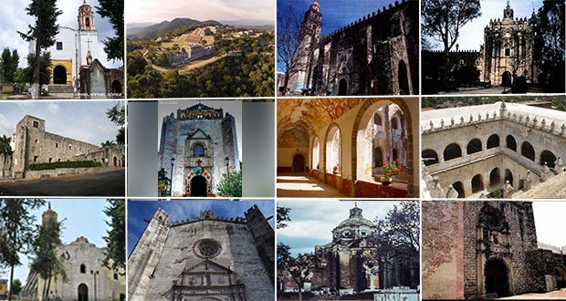

Palacio de Cortés

Museo Robert Brady

Ex Hacienda de Chinameca

Arte Popular (MMAPO)

Museo Carlos Pellicer

Descubre algunos de los tesoros turísticos más importantes del estado de Morelos. Explora museos repletos de historia colonial, impresionantes haciendas prehispánicas y refrescantes balnearios y manantiales naturales.
Instrucciones: Selecciona una categoría arriba y haz clic sobre la foto de cualquier destino para desplegar su información detallada.